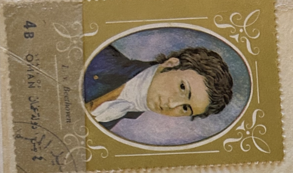
| SOURCE | TITLE| IMAGE MATCH | click to source page |
| lastdodo.com | Ludwig van Beethoven 4 (1972) - Oman [State of] - Illegal Stamps - LastDodo | 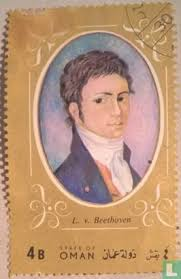 |
| 86 Early Portraits ideas | american folk art, folk art, folk art painting | 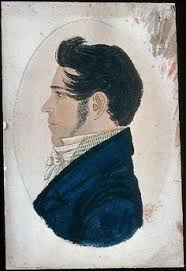 | |
| Art.com | Portrait of Kondraty Fyodorovich Ryleyev (1795-1826), after 1826 Giclee Print | Art.com | 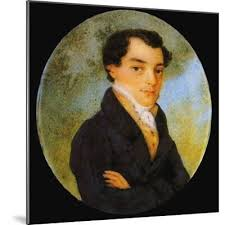 |
| WordPress.com | 1828: Richard Hollister to Lewis Mills Norton – Spared & Shared 8 | 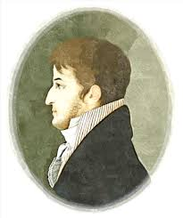 |
| how bout a little BOOK-day Bob Hope's “Confessions if a Hooker” 😂 with his signature on an old Bennett Schneider bookmark (a long gone KC classic book-monger) Winer's Bone by the late | 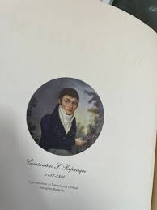 | |
| Massachusetts Historical Society | MHS Collections Online: William Paterson | 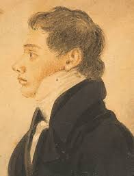 |
| Etsy | PedreTrigos - Etsy | 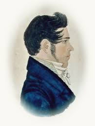 |
| Dreamstime.com | Beethoven Painting Stock Photos - Free & Royalty-Free Stock Photos from Dreamstime | 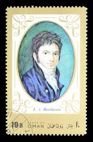 |
| MeisterDrucke - Art Prints, Paintings & Reproductions | Self Portrait in Peter Prison, 1836 | 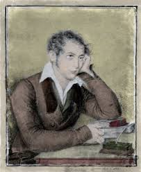 |
| Find a Grave | William Henry Allen (1784-1813) - Find a Grave Memorial |  |
| emuseum.com | Fishing Boats at Gloucester – Works – eMuseum |  |
| Beethoven as a young man! <3** ствия свил Hee acero возрас Лк ЛЫХ печа обст вые E гола 6 снова После до B3pc Каспар Иог mero C был T учи вы | 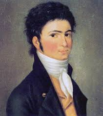 | |
| eBay | Charles G. A. Bourgeois-Circle "Double profile portrait of two little brothers" | eBay | 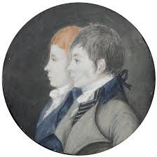 |
| Kanvah Art | Karl Bryullov Canvas Art Prints: Shop Art by the Russian Master Painter — Page 3 — Kanvah | 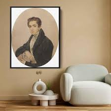 |
| Invaluable.com | Sold at Auction: Diana Mendoza, Portrait Oil Painting Entitled "Gentleman with a Dog" by Diana Mendoza | 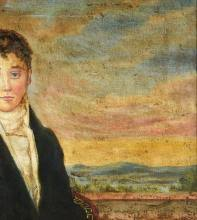 |
| Beethoven in 1799 | 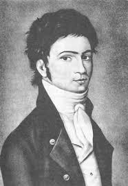 | |
| Fine Art America | Portrait of the painter Johann Carl Eggers Framed Print by Johann Friedrich Overbeck - Fine Art America | 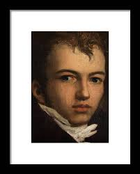 |
| Concertzender | Strolling with Wolfl 111 Tuesday 02/02 at 1900 | Concertzender | Classical, Jazz, World and more | 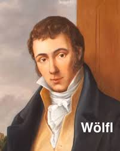 |
| WordPress.com | Beethoven:Piano Concerto No. 5 “Emperor” Pianist: Manlio Giordano | Derrick's Blog | |
| Dreamstime.com | Postage Stamp Printed in Cinderellas (Oman) Shows Ludwig Van Beethoven (1770–1827), Serie, 4 - Omani Baisa, Circa 1972 Editorial Photography - Image of postal, collection: 172908107 | 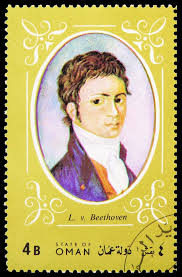 |
| MutualArt | American School, 18th Century | PORTRAIT OF A GENTLEMAN | MutualArt | 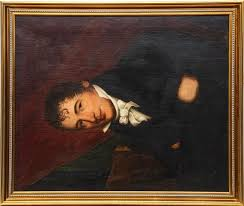 |
| 1st Art Gallery | Self-Portrait 1810s by Fyodor Bruni Reproduction For Sale | 1st Art Gallery | 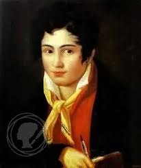 |
| Sheet Music Marketplace | Beethoven Adagio and Allegro from Serenade Op. 25 – 2 Flutes and Clarinet – Sheet Music Marketplace | 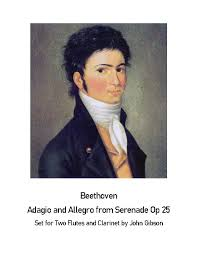 |
| MutualArt | Joseph Partridge | Portrait of Isaac Cowell | MutualArt | 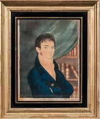 |
| Wikimedia.org | File:Johann Baptist Streicher Wien SAM 736.jpg - Wikimedia Commons | 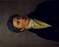 |
| Why is Bellini Considered a Famous Italian Opera Composer? In many ways Bellini was destined to be a famous Italian opera composer. Both Bellini's father and grandfather were Italian and musicians. | 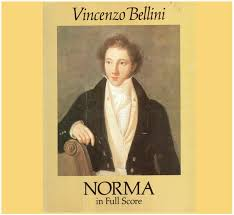 | |
| Nashville Historical Newsletter | James Robertson – Nashville Historical Newsletter | 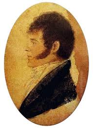 |
| Frances D. Tracy-Mumford (francesdtracymumford) - Profile | Pinterest | 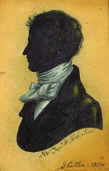 | |
| eBay | TUCK Postcard "St Patrick Day" Picture of Three Men Dear to the Hearts Ireland * | eBay | 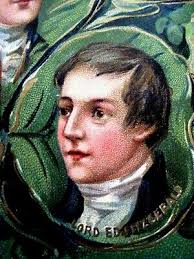 |
| Kanvah | Portrait of the Artist Prince G. G. Gagarin (1829) by Karl Bryullov - Canvas Artwork — Kanvah | 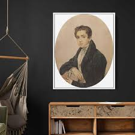 |
| Canadians in Houston: Universal Language film screening | 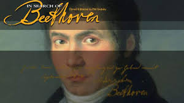 | |
| Amazon.com | Amazon.com: Nachtstücke (Großdruck) (German Edition): 9781484040355: Hoffmann, E. T. A.: Books | 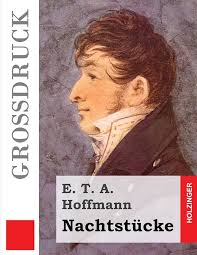 |
| YouTube | Beethoven - Hugo Steurer & Gerhard Pflüger (1956) Concerto pour piano No. 1 in C Major, Op. 15 - YouTube | 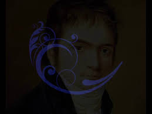 |
| Opera Depot | Beethoven: Missa Solemnis - Stich-Randall, Proctor, Pears, Borg; Horen | 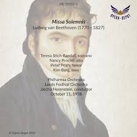 |
| artspacepatchogue.org | Partnerships for Artists Working on Art Projects in Suffolk County, NY | 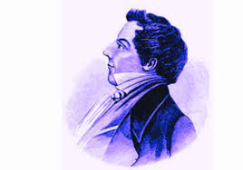 |
| Alamy | Portrait of the composer Gaetano Donizetti (1797-1848), 1830s Stock Photo - Alamy | 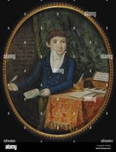 |
| KUTV | LDS church releases photos of Joseph Smith's seer stone | 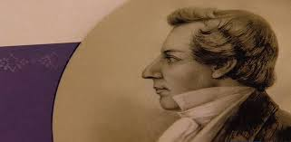 |
| Violity | 1938 А.С. Пушкин и его литературное окружение. Иллюстрации 29х20,5 (109481011) - buy on Violity | 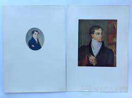 |
| Geneanet | Arsène Marie MAGON de La LANDE : Family tree by Base collaborative Pierfit (pierfit) - Geneanet | 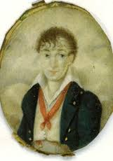 |
| eBay | Double portrait of a young married couple", French miniature, late 1790s | eBay | 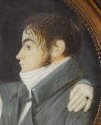 |
| Temu is selling art with Silent Hill creatures now | 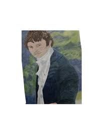 | |
| Redbubble | Lámina rígida for Sale con la obra «Juan José Castelli» de diegomanuel | Redbubble | 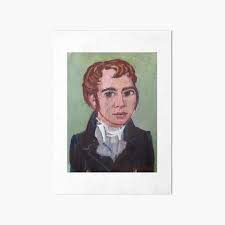 |
| Alamy | 1801 : The music composer LUDWIG Van BEETHOVEN ( Bonn 1770 - Wien 1827 ) , engraved by J.J. Neidle from a missing portrait by Gundolf Stainhauser-Treuburg , Wien , National Bibl. - | 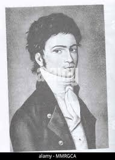 |
| pixels.com | Portrait of the painter Johann Carl Eggers Duvet Cover by Johann Friedrich Overbeck - Pixels | 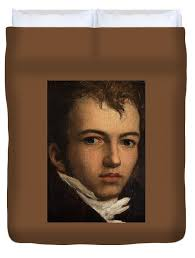 |
| Alamy | Portrait of Ernst Theodor Wilhelm Hoffmann. Museum: Staatsbibliothek Bamberg. Author: ANONYMOUS Stock Photo - Alamy |  |
| MutualArt | Eduard Ender | 46 Artworks at Auction | MutualArt | 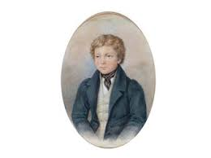 |
| YouTube | Alfredo Corral plays "Tchaikovsky: noviembre" - YouTube | 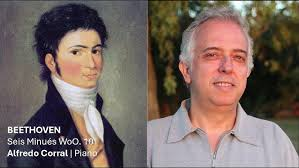 |
| pixels.com | The Sculptor Paul Lemoyne Painting by Jean-Auguste-Dominique Ingres - Pixels | 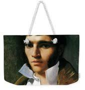 |
| Etsy | Portrait of a Gentleman, Folk Art Work, Wall Decor, Colonial Art, Primitive Print, Antique, Vintage Painting, Colonial, 19th Century, Thyme - Etsy Israel | 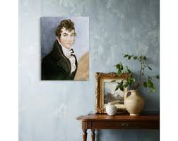 |
| STV Footage Sales | In Search of Burns | STV Footage Sales | 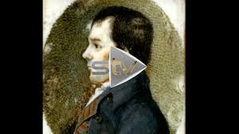 |
| Fine Art America | Portrait of the painter Joseph Sutter #1 Painting by Johann Friedrich Overbeck - Fine Art America | 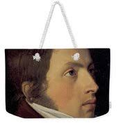 |
| Deezer | Ania Dorfmann: albums, songs, concerts | Deezer | 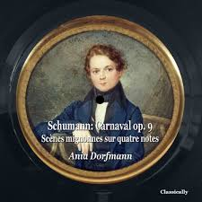 |
| pixels.com | Detail Of Keats Listening To The Nightingale On Hampstead Heath, 1845 Yoga Mat by Joseph Severn - Pixels | 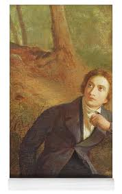 |
| Amazon.com | Gigolo: Ferber, Edna: 9781977900425: Amazon.com: Books | |
| Etsy | Mr. Darcy / Colin Firth Print of Colored Pencil Drawing - Etsy Ireland | |
| Fine Art America | Portrait of Italian opera composer Vincenzo Bellini -1801 - 1835-, Litograph, XIX century. Greeting Card by Jean Francois Millet -1814-1875- | |
| Alamy | Horatio nelson hi-res stock photography and images - Alamy | |
| ppt Онлайн | John Keats (31 October 1795 – 23 February 1821) - online presentation | |
| Amazon.com | Adam Bede: Eliot, George: 9781503136106: Amazon.com: Books |
{kind=link}